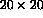

In Fortran 90, information is communicated into a procedure either via the argument list or else via global data stored in a MODULE (or a COMMON block).
Due to the nature of HPF, it is not permitted to supply HPF objects, for example, TEMPLATE or PROCESSORS grids, as actual arguments -- a different method must be employed. It is possible (and, indeed, desirable) to use MODULE s to allow global mapping objects to be visible to all subprograms. This will be discussed later.
HPF supports a number of mechanisms for informing a procedure of the mapping of its dummy arguments. Every object that appears as a dummy argument must have some sort of mapping. HPF allows the programmer to say one of the following things about each argument:
During the development of HPF compilers it has become clear that it will never be easy to implement transcriptive (or INHERIT ed) distribution efficiently. The problems arise with array sections being used as actual arguments; in Fortran 90 (and of course HPF) it is possible to collapse one or more dimensions of an actual argument by using a scalar index, for example,
CALL Subby(A(i,:,:,:)) CALL Subby(A(:,j,:,:)) CALL Subby(A(:,:,k,:)) CALL Subby(A(:,:,:,l))
In each of the invocations above, the dummy argument will be mapped to a different subset of processors so, upon compilation, the compiler will have to generate four different strains of Subby (one for each different dimension that is collapsed). For each of these strains, there will have to be one version of the procedure for each of the different distribution methods present in the program (could be five). This could lead to 20 different versions being needed for one single argument.
If our subroutine had more than one argument then a version of Subby would have to be generated for each possible combination of arguments, with two 4D array arguments this would mean  or 400 instances of Subby must be generated. It can be seen that things can very soon get out of hand!
The only way to get around this problem is to generate a general version of the Subby subroutine to cater for all possible mappings and combination of mappings. This routine would effectively have to resolve mappings at run-time which would slow down execution to an unacceptable level (LPF - Low Performance Fortran!)
In this course we only discuss prescriptive and descriptive distributions.